Identidade visual
Construção da linguagem gráfica, direção de arte e definição dos elementos recorrentes da campanha.
Identidade visual e sistema de comunicação para uma campanha à presidência da OAB Pernambuco, com desdobramentos digitais, impressos e presenciais.

A campanha exigia uma comunicação reconhecível e consistente, capaz de funcionar em diferentes formatos, canais e momentos sem perder unidade visual.
Fiquei responsável pela criação da identidade visual e pelo desenvolvimento dos principais materiais gráficos, conectando redes sociais, WhatsApp, email marketing, website, materiais impressos, ações de rua e comunicação de comitê.
O trabalho foi construído como um sistema: uma mesma linguagem visual adaptada a peças informativas, mobilização, eventos, propostas e materiais físicos.
Construção da linguagem gráfica, direção de arte e definição dos elementos recorrentes da campanha.
Peças para redes sociais, WhatsApp, divulgação de eventos, propostas, pesquisas e mobilização.
Folhetos, adesivos, crachás, folders e materiais de apoio para campanha presencial.
Aplicações para mural, comitê, backdrop e pontos de contato físicos da campanha.
Peças e diretrizes visuais para o site, mantendo continuidade entre a campanha online e offline.
Peças para redes sociais e WhatsApp: divulgação de eventos, propostas, pesquisas e mobilização.
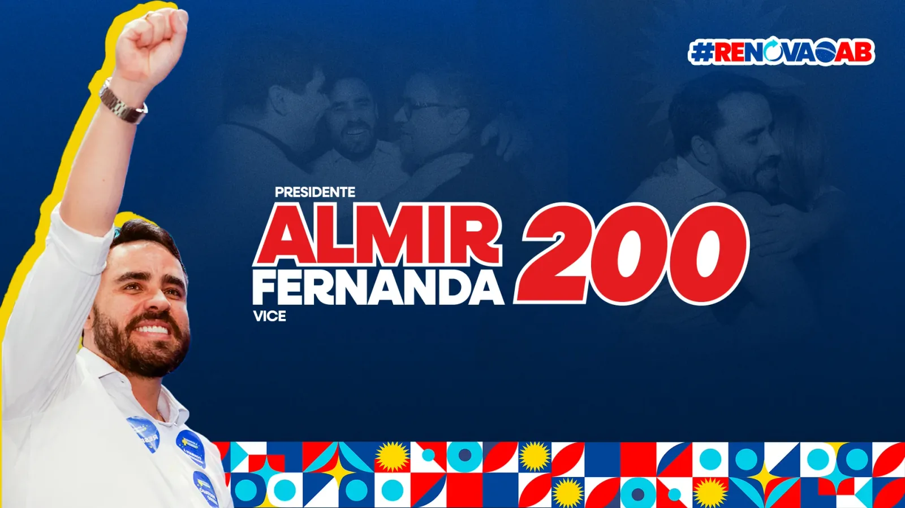
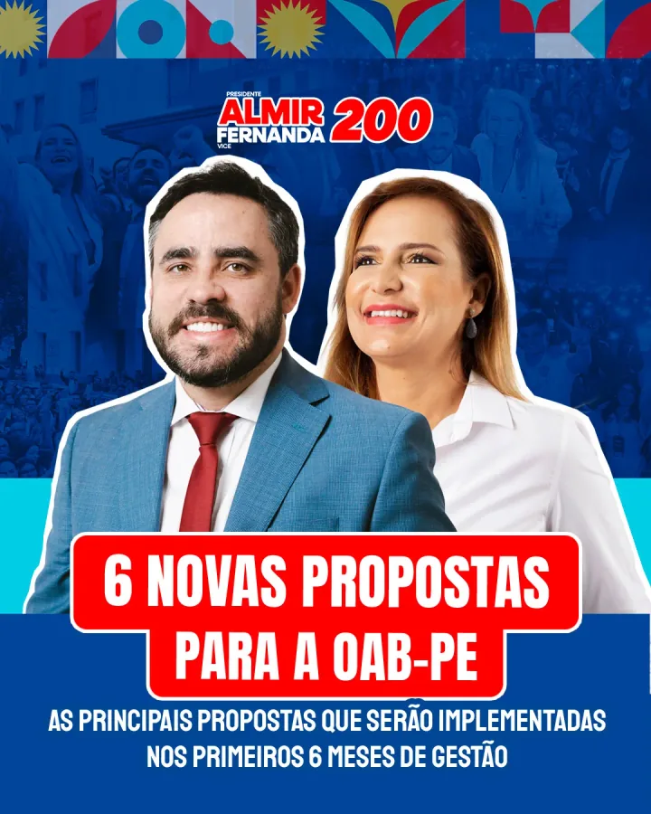
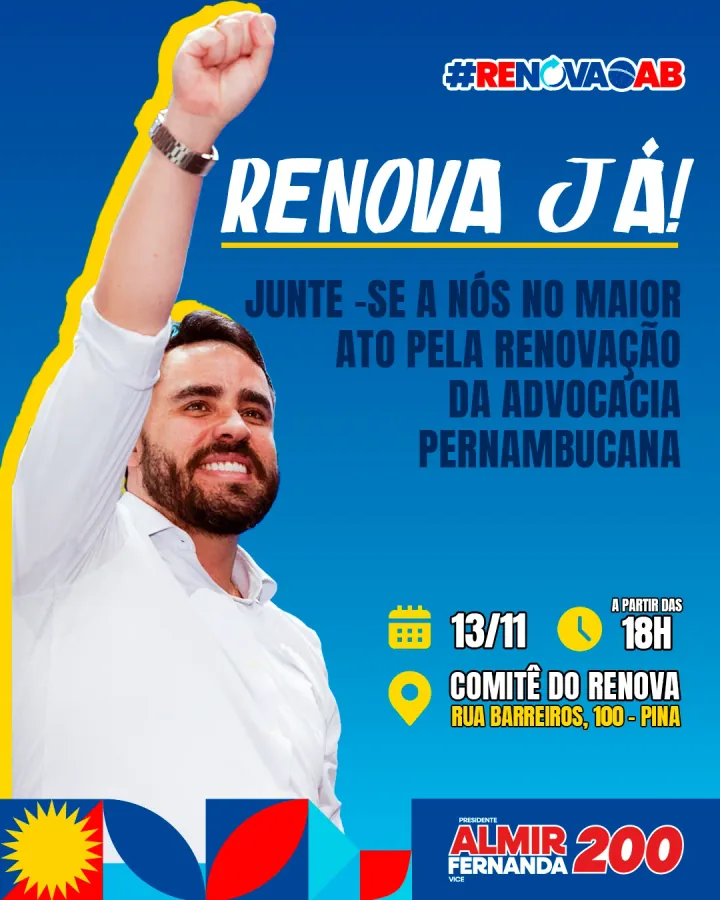
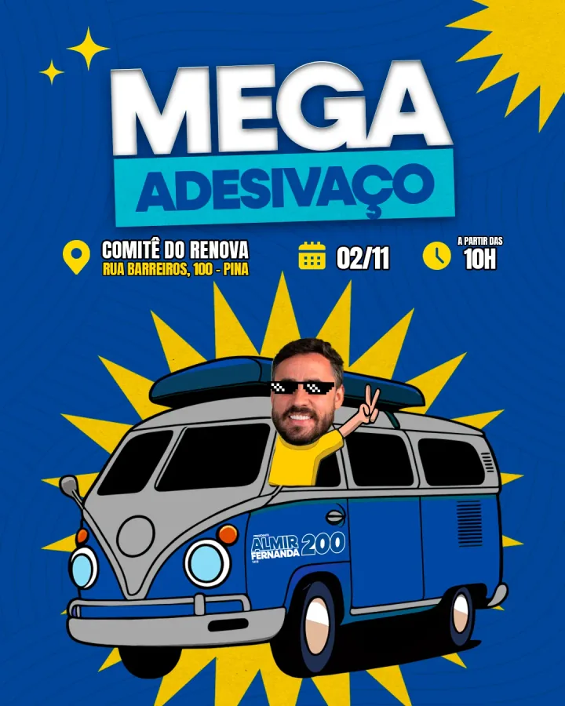
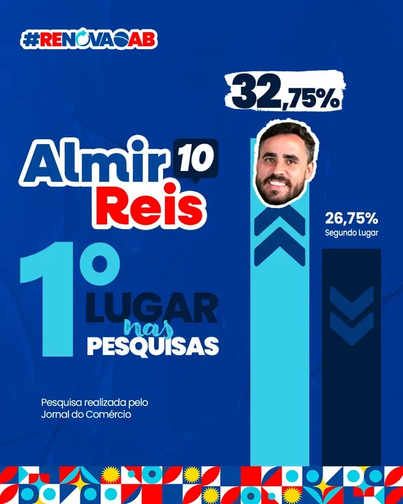
Sequências, propostas, prestação de contas e peças panorâmicas mantendo a mesma linguagem.
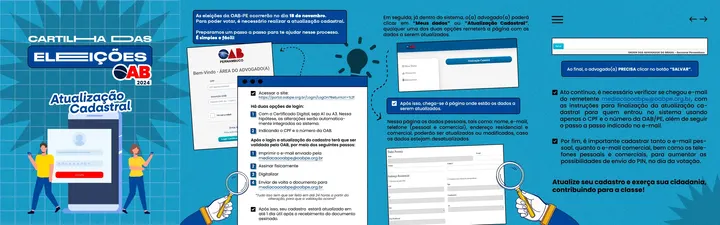
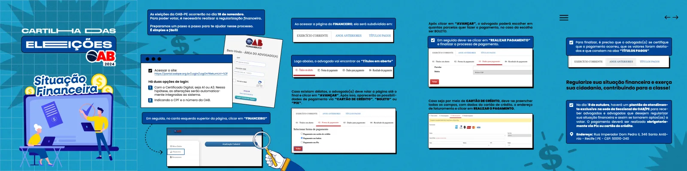
Materiais pensados para manter reconhecimento da campanha em todos os pontos de contato.
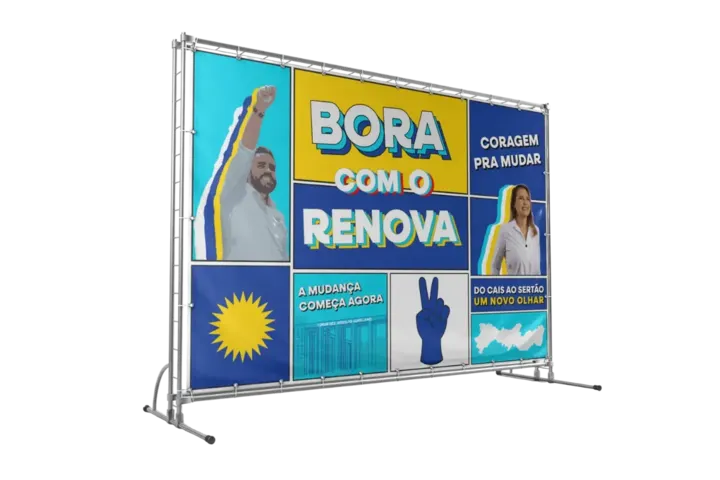
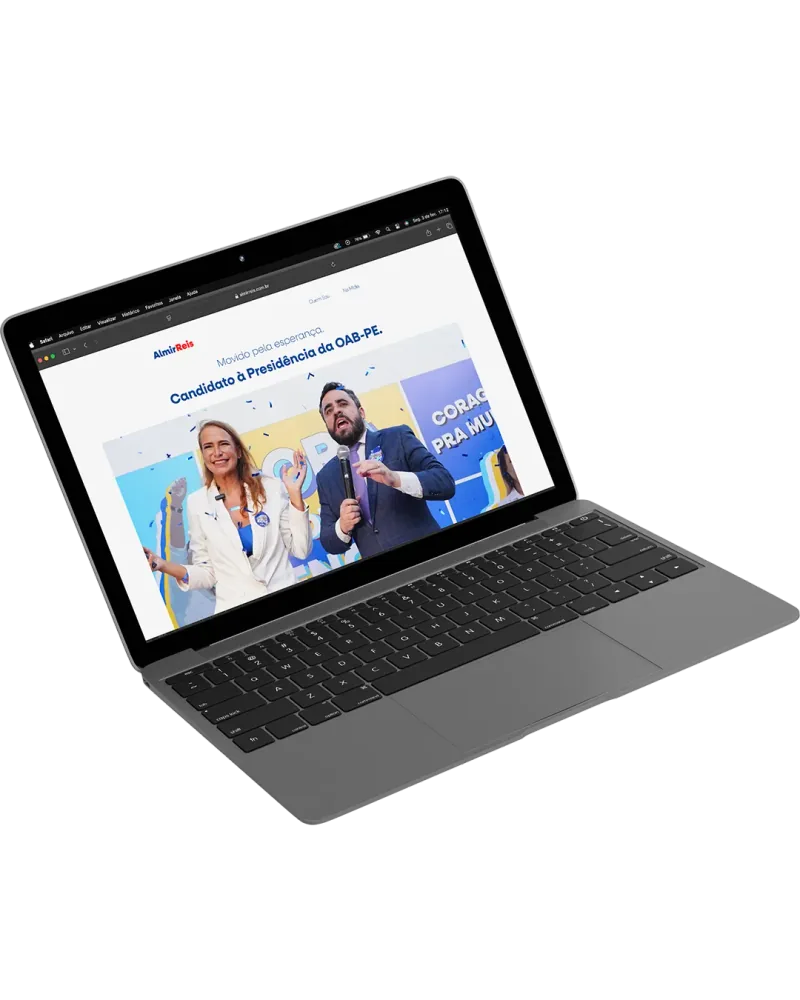
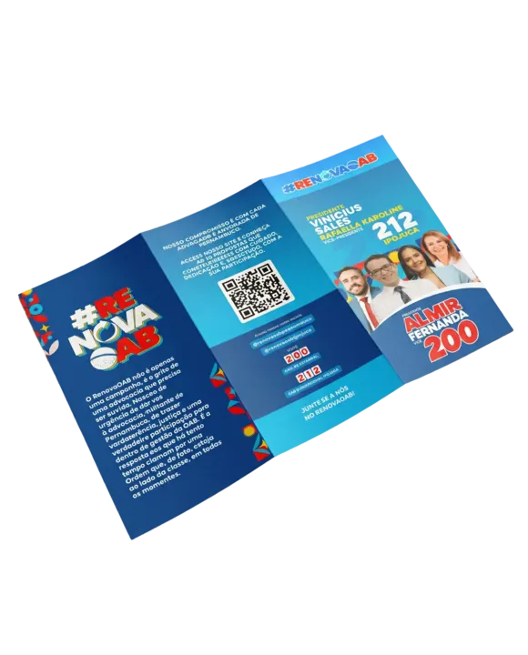
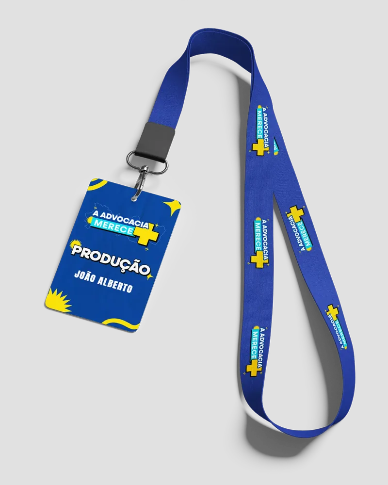
Uma série de mensagens curtas para ampliar presença, mobilização e reconhecimento visual.
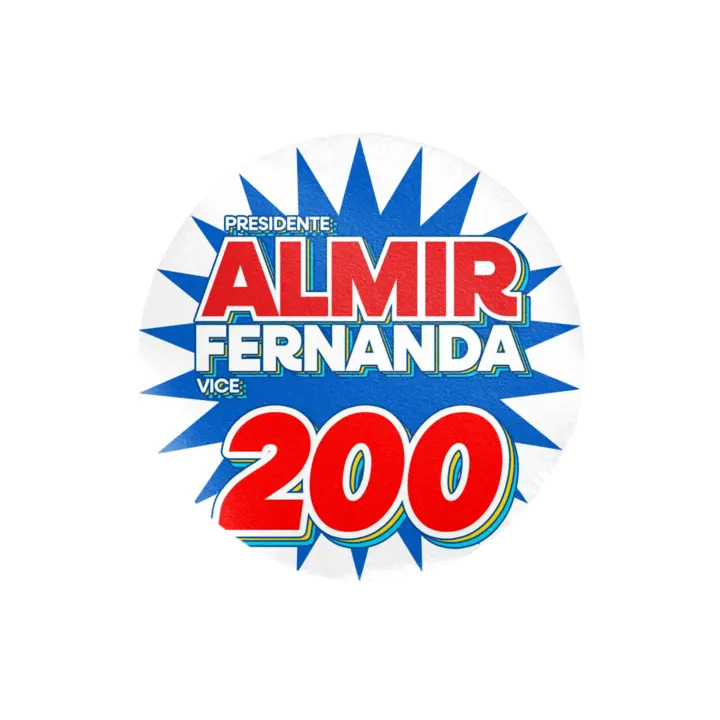
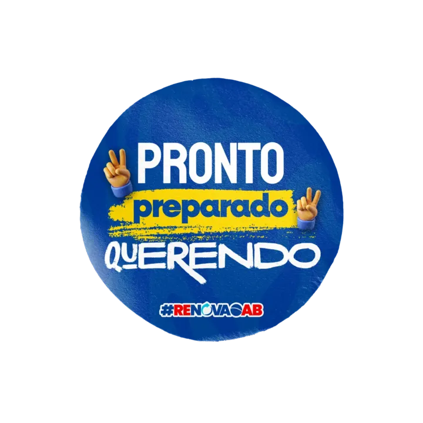
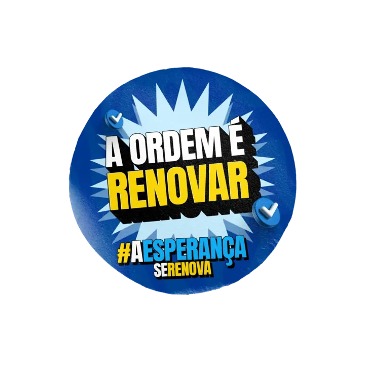
Identidades, campanhas e experiências digitais construídas para funcionar como um sistema.
Entre em contato